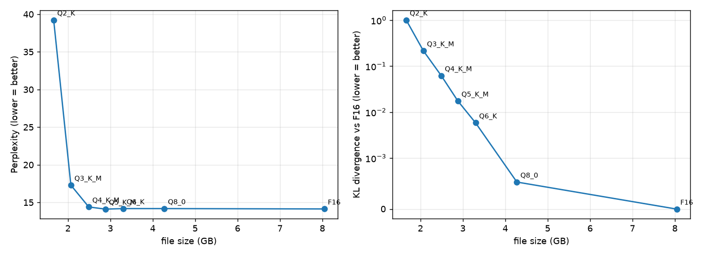

Results
Step 1: absmax on model.layers.10.mlp.gate_proj.weight (Qwen3-1.7B, shape (6144, 2048))
| bits |
granularity |
MSE |
max error |
bpw |
| int8 |
tensor |
2.700e-06 |
0.0028 |
8.0000 |
| int8 |
channel |
1.183e-07 |
0.0028 |
8.0078 |
| int8 |
256 |
7.867e-08 |
0.0028 |
8.0625 |
| int8 |
128 |
6.640e-08 |
0.0028 |
8.1250 |
| int8 |
64 |
5.456e-08 |
0.0028 |
8.2500 |
| int8 |
32 |
4.336e-08 |
0.0028 |
8.5000 |
| int8 |
16 |
3.281e-08 |
0.0028 |
9.0000 |
| int4 |
tensor |
7.386e-04 |
0.0515 |
4.0000 |
| int4 |
channel |
3.866e-05 |
0.0515 |
4.0078 |
| int4 |
256 |
2.582e-05 |
0.0515 |
4.0625 |
| int4 |
128 |
2.181e-05 |
0.0515 |
4.1250 |
| int4 |
64 |
1.793e-05 |
0.0515 |
4.2500 |
| int4 |
32 |
1.424e-05 |
0.0515 |
4.5000 |
| int4 |
16 |
1.077e-05 |
0.0483 |
5.0000 |
Outlier block (index 170864): max|w|=0.3750, median|w|=0.0066, s=0.0536
29/32 weights become 0 (int4); values q: [0, 0, 0, 0, -1, 0, -4, 0, 0, 0, 0, 0, 0, 0, 0, 0, 0, 0, 0, 0, 0, 0, -7, 0, 0, 0, 0, 0, 0, 0, 0, 0]
Typical block: s=0.0098, 4/32 zeros, q range -6..7
Fraction of zeros over all blocks: 14.09%
Step 2: Q8_0 and Q4_0 from scratch (model.layers.10.mlp.gate_proj.weight, Qwen3-1.7B)
| format |
bytes/block |
bpw |
bytes equal to gguf |
max dequant difference |
MSE |
| Q8_0 |
34 |
8.5 |
100.0000% |
0.0e+00 |
4.342e-08 |
| Q4_0 |
18 |
4.5 |
100.0000% |
0.0e+00 |
1.115e-05 |
| int4 symmetric (step 1, block 32) |
- |
4.5 |
- |
- |
1.424e-05 |
Step 3: Qwen3-4B, GGUF variants (WikiText-2 test, ctx 512, 100 chunks)
| variant |
size (GB) |
bpw |
PPL |
ΔPPL vs F16 |
KLD |
same top-1 % |
pp t/s |
tg t/s |
tg-speedup |
| F16 |
8.05 |
16.00 |
14.136 |
+0.0% |
0.0000 |
100.0 |
557 |
15.1 |
1.00x |
| Q8_0 |
4.27 |
8.50 |
14.181 |
+0.3% |
0.0005 |
99.0 |
533 |
28.2 |
1.87x |
| Q6_K |
3.30 |
6.56 |
14.180 |
+0.3% |
0.0058 |
96.6 |
506 |
36.5 |
2.43x |
| Q5_K_M |
2.88 |
5.73 |
14.114 |
-0.2% |
0.0174 |
94.5 |
480 |
37.0 |
2.46x |
| Q4_K_M |
2.49 |
4.95 |
14.398 |
+1.9% |
0.0621 |
90.2 |
514 |
44.9 |
2.98x |
| Q3_K_M |
2.07 |
4.12 |
17.297 |
+22.4% |
0.2158 |
82.7 |
491 |
37.8 |
2.51x |
| Q2_K |
1.66 |
3.31 |
39.237 |
+177.6% |
1.0129 |
65.2 |
505 |
47.3 |
3.14x |

Notes on step 3:
- ΔPPL is relative to the standalone F16 run (14.136). The "PPL(base)" in the KL logs (13.97) is 1.2% lower and therefore not usable as a baseline (cause not investigated; presumably the compressed stored logits).
- PPL has ±0.31 absolute uncertainty (100 chunks); the ΔPPL between variants is paired and more accurate. Q5_K_M < Q6_K/Q8_0 in PPL is noise; KLD does order them correctly.
- tg speed: 3 repetitions (-r 3), roughly ±2%.
Step 4: imatrix (calibration: WikiText-2 train, 200 chunks x 512; evaluation: test, 100 chunks)
| type |
size (GB) |
bpw |
PPL |
ΔPPL |
KLD without |
KLD with imatrix |
KLD reduction |
top-1 without |
top-1 with |
| Q8_0 |
4.28 |
8.51 |
14.18 → 14.18 |
+0.3% |
0.0005 |
0.0005 |
0% |
99.0 |
99.0 |
| Q6_K |
3.31 |
6.58 |
14.18 → 14.20 |
+0.5% |
0.0058 |
0.0047 |
19% |
96.6 |
96.9 |
| Q4_K_M |
2.50 |
4.97 |
14.40 → 14.69 |
+3.9% |
0.0621 |
0.0422 |
32% |
90.2 |
91.8 |
| Q3_K_M |
2.08 |
4.13 |
17.30 → 15.21 |
+7.6% |
0.2158 |
0.1403 |
35% |
82.7 |
85.2 |
| Q2_K |
1.67 |
3.32 |
39.24 → 16.33 |
+15.6% |
1.0129 |
0.4039 |
60% |
65.2 |
75.1 |
| IQ2_XS |
1.35 |
2.69 |
19.98 |
+41.3% |
n/a |
0.7626 |
n/a |
n/a |
65.8 |
PPL: 'without → with'. ΔPPL vs F16 (14.136). IQ2_XS does not exist without imatrix.
Step 5A: NF4 vs Q4_0 (MSE on weights, Qwen3-1.7B)
| tensor |
kurtosis |
Q4_0 block32 (4.50 bpw) |
NF4 block32 (4.50) |
NF4/Q4_0 |
Q4_0 block64 (4.25) |
NF4 block64 (4.25) |
NF4/Q4_0 |
NF4 block64 + DQ (4.13) |
| L10.self_attn.q_proj |
4.6 |
9.063e-06 |
8.975e-06 |
0.99 |
1.129e-05 |
1.009e-05 |
0.89 |
1.009e-05 |
| L10.self_attn.k_proj |
4.0 |
8.291e-06 |
8.284e-06 |
1.00 |
1.026e-05 |
9.285e-06 |
0.90 |
9.287e-06 |
| L10.self_attn.v_proj |
3.4 |
9.147e-06 |
8.992e-06 |
0.98 |
1.130e-05 |
1.010e-05 |
0.89 |
1.010e-05 |
| L10.self_attn.o_proj |
4.5 |
7.529e-06 |
7.608e-06 |
1.01 |
9.250e-06 |
8.492e-06 |
0.92 |
8.493e-06 |
| L10.mlp.gate_proj |
4.2 |
1.115e-05 |
1.099e-05 |
0.99 |
1.392e-05 |
1.241e-05 |
0.89 |
1.241e-05 |
| L10.mlp.up_proj |
3.7 |
9.287e-06 |
9.108e-06 |
0.98 |
1.159e-05 |
1.029e-05 |
0.89 |
1.029e-05 |
| L10.mlp.down_proj |
4.6 |
8.883e-06 |
8.229e-06 |
0.93 |
1.138e-05 |
9.485e-06 |
0.83 |
9.486e-06 |
| L0.mlp.gate_proj |
3.8 |
1.149e-05 |
1.143e-05 |
0.99 |
1.429e-05 |
1.284e-05 |
0.90 |
1.284e-05 |
| L27.mlp.gate_proj |
3.9 |
1.044e-05 |
1.050e-05 |
1.01 |
1.292e-05 |
1.176e-05 |
0.91 |
1.177e-05 |
Mean NF4/Q4_0 MSE ratio: block32 0.99, block64 0.89. Kurtosis: normal = 3.
Step 5B: GPTQ-light vs RTN (L10 gate_proj, int4, block 32, calibration 32768 train tokens, damp 0.01)
| method |
weight MSE |
output error (test) |
relative output error (test) |
relative output error (train) |
| RTN |
1.424e-05 |
9.061e-03 |
3.922e-03 |
3.871e-03 |
| GPTQ |
2.040e-05 |
4.095e-03 |
1.773e-03 |
1.354e-03 |
GPTQ/RTN: weight-MSE 1.43x, output error (test) 0.45x